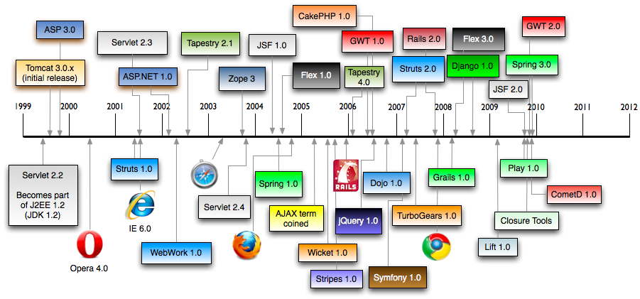

Les frameworks MVC 2
Un framework MVC est un conteneur dans le conteneur jee.
Il offre des services supplémentaires facilant la création d'applications web :
- Request dispatching (URL mapping) : routage de la requête vers le bon traitements.
- Binding et validation : conversion des paramètres, affectation et gestion des erreurs.
- Gestion de formulaires : simplification et gestion des erreurs
- Rendering : aide à la création des fichiers jsp ou autres technologies.
L'architecture d'un framwork MVC 2 est simple et encourage la séparation des responsabilités.

Le MVC 2 se distingue du MVC par l'introduction d'un front controller (Dispatcher).
Une brève histoire des frameworks MVC :
L'écosystème est riche et dynamique.
Spring MVC est un pur framework MVC 2 dont la configuration repose sur spring.
Depuis spring 2.5, il est fortement basé sur les annotations.
Dans une application web avec spring MVC, on retrouve donc.
- Un descripteur de déploiement web jee (web.xml)
- Des contextes spring (1 contexte parent et 1 contexte par dispatcher spring)
Pour une application spring, la configuration est relativement aisée.
En comparaison d'autres frameworks nativement web, cette configuration est un peu lourde.
Le descripteur de déploiement comporte ce qu'il faut afin de charger le contexte spring
<!-- Handles Spring requests -->
<servlet>
<servlet-name>spring</servlet-name>
<servlet-class>org.springframework.web.servlet.DispatcherServlet</servlet-class>
<load-on-startup>1</load-on-startup>
</servlet>
<servlet-mapping>
<servlet-name>spring</servlet-name>
<url-pattern>/</url-pattern>
</servlet-mapping>
Le contrôleur frontal (DispatcherServlet) distribue toutes les requêtes (mapping sur /).
Le nom de la servlet (ici spring) détermine le nom par défaut du fichier spring associé.
Le fichier spring chargé est donc WEB-INF/spring-servlet.xml
C'est un contexte spring classique auquel se rajoute les éléments mvc.
<context:component-scan base-package="fr.mon.package" /> <!-- Activation des annotations --> <context:annotation-config /> <!-- Enregistrement de convertisseurs et formatteurs spécifiques au mvc --> <mvc:annotation-driven /> <!-- Forwarde les demandes de fichiers statiques vers la servlet par défaut du conteneur --> <mvc:default-servlet-handler /> <!-- Définition de la Locale pour les opération de formattage --> <bean id="localeResolver" class="...FixedLocaleResolver"> <property name="defaultLocale" value="fr_FR" /> </bean> <!-- Configure la technologie de templating --> <bean id="jspViewResolver" class="...InternalResourceViewResolver"> <property name="viewClass" value="...JstlView" /> <property name="prefix" value="/WEB-INF/jsp/" /> <property name="suffix" value=".jsp" /> </bean>
Un contrôleur est un composant spring spécial dédié aux traitements des requêtes HTTP.
@Controller
public class HelloWorldController {
@RequestMapping("/hello")
public void hello(HttpServletResponse response) throws IOException {
response.getWriter().write("Hello !");
}
}
Grâce au scan de composants, on peut donc déclarer facilement de nouveaux contrôleurs.
L'annotation @RequestMapping permet de mapper une méthode sur une uri.
Il n'y a pas d'héritage et de signature de méthode imposée.
Les paramètres de la requête peuvent être déclarés comme des paramètres de la méthode.
http://localhost:8080/hello?name=Steven
Et la méthode associée
@Controller
public class HelloWorldController {
@RequestMapping("/hello")
public void hello(HttpServletResponse response, String name)
throws IOException {
response.getWriter().write("Hello " + name + " !");
}
}
L'annotation @RequestParam permet de d'ajuster le mapping du paramètre.
Le framework est capable de convertir les paramètres vers le bon type de données
http://localhost:8080/hello?value=10
Et la méthode associée
@Controller
public class HelloWorldController {
@RequestMapping("/hello")
public void hello(HttpServletResponse response, Integer value) throws IOException {
response.getWriter().write("Hello " + value + " !");
}
}
En cas d'erreur de conversion (/hello?value=xyz) une erreur 400 (Bad Request) est lancée.
Il est aussi possible de découper le chemin de la requête et de s'en servir comme paramètres.
http://localhost:8080/hello/Steven
Et la méthode associée
@Controller
public class HelloWorldController {
@RequestMapping("/hello/{name}")
public void hello(HttpServletResponse response, @PathVariable String name)
throws IOException {
response.getWriter().write("Hello " + name + " !");
}
}
Cela permet de construire des urls de service élégantes.
C'est un point important du référencement naturel : la capacité a remonter naturellement dans les moteurs de recherche.
Les liste des paramètres injectables est longue.
- HttpServletRequest
- HttpServletResponse
- HttpSession
- InputStream / Reader
- OutputStream / Writer
- Paramètres
- Headers
- Locale
- Principal
- Model
- Errors
On pourrait donc simplifier notre code
@Controller
public class HelloWorldController {
@RequestMapping("/hello")
public void hello(Writer writer, String name) throws IOException {
writer.write("Hello " + name + "!");
}
}
http://static.springsource.org/spring/docs/3.0.x/spring-framework-reference/html/mvc.html#mvc-ann-requestmapping-arguments
La liste des retours possible est aussi longue.
- ModelAndView
- Model / Map
- View
- String (logical view name)
- void
- @ResponseBody
- @ModelAttribute
Ce qui nous permet de simplifier encore notre code
@Controller
public class HelloWorldController {
@RequestMapping("/hello")
@ResponseBody
public String hello(String name) {
return "Hello " + name + "!";
}
}
Avec @ResponseBody, spring comprend que le retour de la méthode doit être écrit dans le corps de la réponse.
Dans un conteneur de servlet, un forward consiste a passer la main à un autre composant.
Pour demander à spring de passer la main à une jsp, on peut retourner le nom du fichier.
@Controller
public class HelloWorldController {
@RequestMapping("/hello")
public String hello(String name) {
return "hello";
}
}
Retourner une chaîne de caractères est interprété comme un forward vers une vue.
Vu la configuration de notre ViewResolver, spring va appeler le fichier /WEB-INF/jsp/hello.jsp
Le rôle du controller est d'interagir avec les services et de préparer le modèle.
@Controller
public class HelloWorldController {
@RequestMapping("/hello")
public String hello(Model model, String name) {
model.addAttribute("name", name);
return "hello";
}
}
Le rôle de la vue est de recevoir le modèle de données et de le mettre en forme.
<%@ page language="java" contentType="text/html; charset=UTF-8"
pageEncoding="UTF-8"%>
<!DOCTYPE html PUBLIC "-//W3C//DTD HTML 4.01 Transitional//EN"
"http://www.w3.org/TR/html4/loose.dtd">
<html><head>...</head>
<body>Hello ${name} !</body>
</html>
Spring mvc propose un gestion assez classique des formulaires.
Nous allons prendre le formulaire suivant comme exemple.
Le code jsp qui correspondant.
<form:form commandName="person" method="post" action="/editPerson"> nom <form:input path="name"> ,age <form:input path="age"> <form:submit> <form:hidden path="id"> </form>
Pour le code html précédent, nous allons définir la classe suivante.
public class PersonForm {
private Long id;
private String name;
private Integer age;
... getters and setters
}
Par convention, il est pratique d'utliser le suffixe Form.
Cependant, n'importe quelle classe avec les accesseurs disponibles pour les champs du formulaire ferait l'affaire.
Il est même possible d'utiliser des objets du domaine métier qui serviront à la persistance.
Le contrôleur supporte l'affichage et la modification de la donnée
@Controller
@RequestMapping("/editPerson")
public class PersonController {
@RequestMapping(method = RequestMethod.GET)
public String form(Long id, Model model) {
... aller cherche la personne en base
... forwarder vers la vue
}
@RequestMapping(method = RequestMethod.POST)
public String submit(@ModelAttribute("person") PersonForm person,
BindingResult result) {
... gérer les erreurs
... sauver et faire un redirect
}
}
Le framework aide à la gestion des formulaires sur 2 points essentiels
- Le binding : prendre les chaînes de caractères dans la requête et remplir l'objet (form backing bean)
- La validation : noter toutes les erreurs de conversion lors du binding et être capable d'afficher des messages d'erreur
La JSR 303 (bean validation) simplifie la configuration de la validation.
@NotEmpty private String name;
@RequestMapping(method = RequestMethod.POST)
public String post(@ModelAttribute("person") @Valid PersonForm form,
BindingResult result) {
if (result.hasError()) {
return "form";
}
...
}
Lors du POST du formulaire, des données sont envoyées au serveur.
En cas de succès, une modification est inscrite dans la base de données du serveur.
Faire un refresh sur un navigateur consiste a refaire la même requête.
Dans notre cas, un refresh ferait une deuxième écriture en base.
Il est donc impératif que le contrôleur fasse un redirect après une modification en base.
Ce pattern est appelé redirect after POST
Cela permet d'éviter l'insert de doublons en base et d'assurer le fonctionnement normal du bouton back du navigateur.